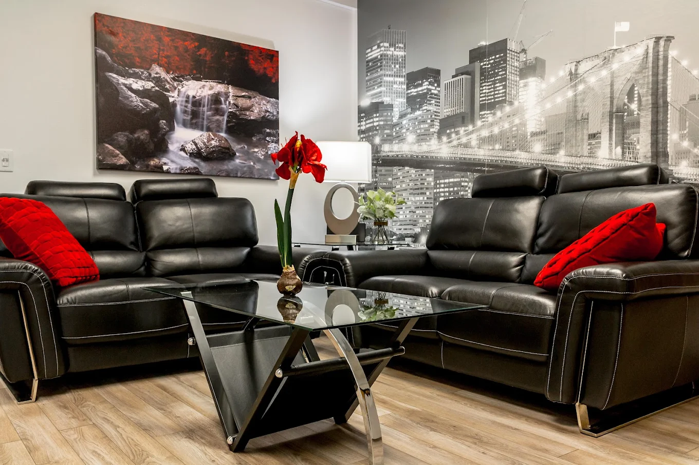

Every plan is medically supervised and built around your needs, your comfort, and your privacy — available in our Scottsdale office or by telemedicine across Arizona.
A safe, medically managed withdrawal from heroin, fentanyl, and prescription opioids. We ease symptoms and protect your health while your body clears, so the hardest part feels far more manageable.

Alcohol withdrawal can be dangerous without supervision. Our team manages it carefully — reducing risk, calming symptoms, and keeping you safe and comfortable as you stabilize.

Medication-assisted treatment that quiets cravings and prevents relapse. We handle induction and ongoing management so your recovery stays steady, predictable, and under expert care.

Oral naltrexone and the monthly Vivitrol injection block the effects of opioids and reduce alcohol cravings — a powerful, non-addictive tool to keep recovery on track between visits.

A once-monthly extended-release naltrexone injection that reduces alcohol cravings — one decision a month instead of thirty daily ones.

A monthly injection that blocks the effects of opioids entirely — powerful relapse protection once detox is complete.

Restorative IV hydration and nutrient infusions replenish what dependence depletes — helping you feel stronger, clearer, and more comfortable as your body recovers.

Dependence on more than one substance needs coordinated, careful care. We build a single, customized plan that addresses everything at once — safely, and without overwhelm.

We specialize in anonymity. Your care stays confidential from your first call onward.
Single appointments, telemedicine options, and scheduling that respects your life.
Transparent pricing with no surprise fees — quality detox that costs less than expected.
Yes. For many patients, medically supervised outpatient detox is a safe, effective option. Your physician evaluates your history and substance use to confirm outpatient care is appropriate and to build the right plan for you.
Less than most people expect. We keep pricing transparent and straightforward, with no surprise fees. Reach out and we'll give you a clear answer about cost and any coverage before you commit.
In many cases, yes. We offer secure telemedicine visits across Arizona so you can start or continue treatment from the comfort and privacy of home, with the same physician-led care.
Absolutely. Confidentiality is at the core of Med X. We specialize in anonymity and protect your privacy at every step — from a discreet location to HIPAA-protected telemedicine.
Often the same week. Getting started is simple — call us or request an appointment online, and we'll find a time that works for you as quickly as possible.
Start a confidential conversation today. We'll help you find the right path forward.